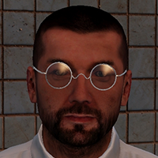

Specialty: BIOMEDICAL ENGINEERING
SVOBODA's goal for this project is to learn how the unique properties of the artifacts recovered in the Nadbor Exclusion Zone can affect treatment of medical patients. He was also brought on to ensure the safety of the team, as the biological affects of interacting with these artifacts is unknown.